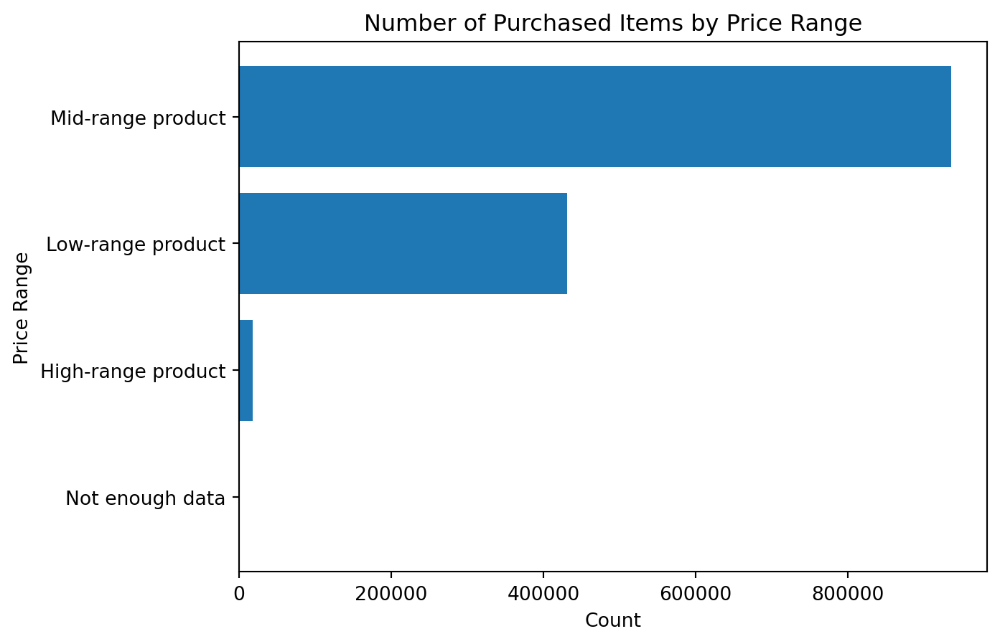
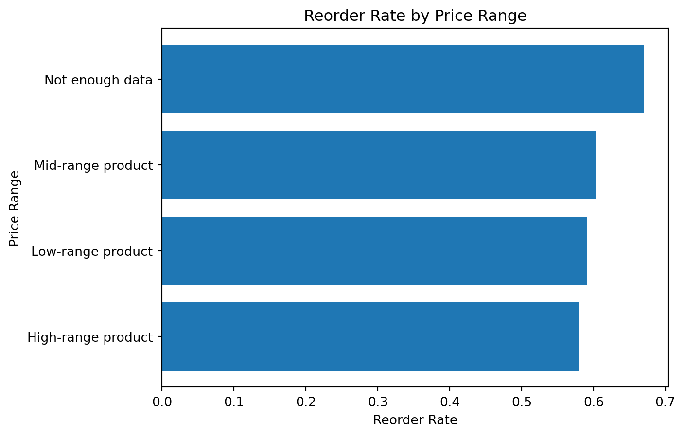
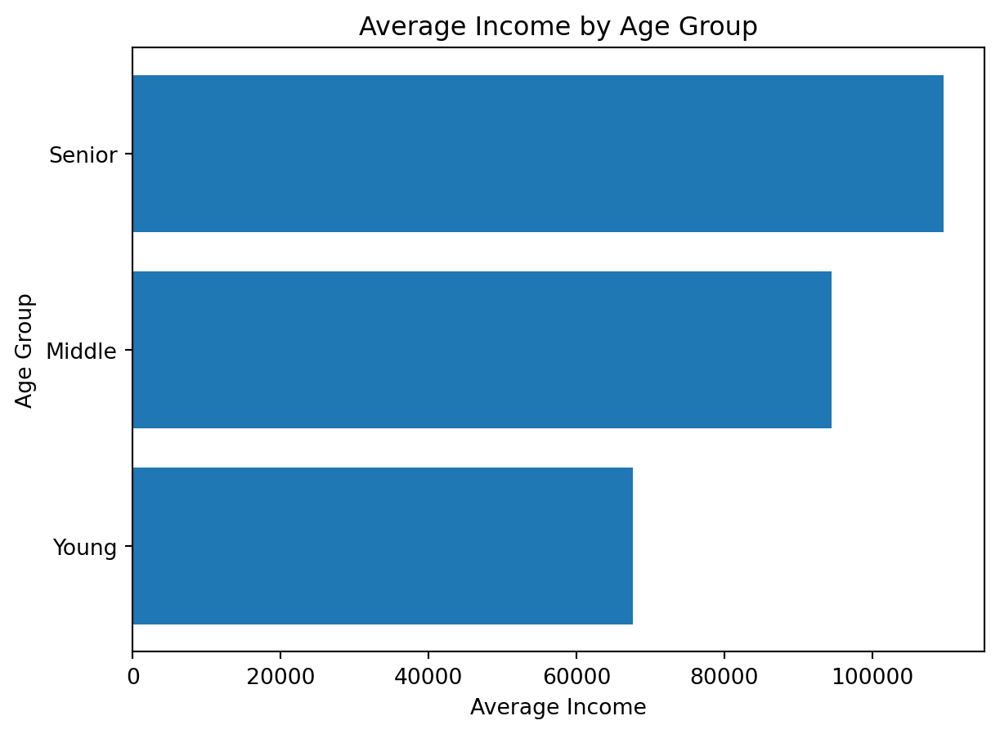
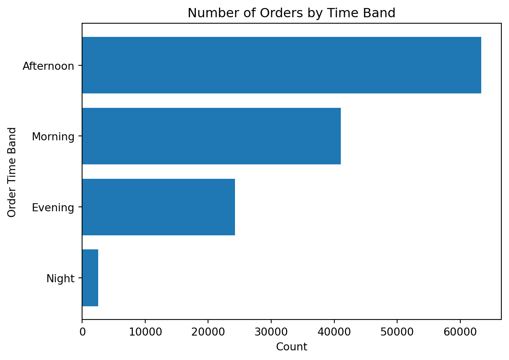

def score_label(score):
if score >= 90:
return "Excellent"
elif score >= 70:
return "Good"
elif score >= 50:
return "Pass"
else:
return "Fail"
score_label(85)'Good'So far, we used matplotlib to visualize variables that already existed in the instacart DataFrame. However, in real data analytics work, we often need to go one step further.
We do not always visualize raw variables directly. Very often, we first create derived columns.
A derived column is a new column created from existing variables.
It helps us:
In this section, we will learn how Python functions help us create such columns in a clean and reusable way.
In order to do so, we will learn, define and apply custom functions
A function is a reusable block of code designed to perform a specific task.
Instead of writing the same logic again and again, we write it once and then apply it wherever needed.
This is especially helpful in data analytics because many tasks involve repeated logic, such as:
A basic Python function looks like this:
The logic is:
Let us start with a simple synthetic example.
Suppose we want to label a student’s score.
'Good'This function takes one input, score, and returns a category.
Now let us create a small DataFrame and apply the function.
| student | score | |
|---|---|---|
| 0 | Anna | 95 |
| 1 | Ben | 78 |
| 2 | Chris | 61 |
| 3 | Diana | 43 |
| 4 | Eva | 88 |
apply| student | score | score_label | |
|---|---|---|---|
| 0 | Anna | 95 | Excellent |
| 1 | Ben | 78 | Good |
| 2 | Chris | 61 | Pass |
| 3 | Diana | 43 | Fail |
| 4 | Eva | 88 | Good |
This is our first example of creating a derived column using a Python function.
Imagine writing separate conditional code every time you need the same rule. That would lead to:
A function solves this by keeping the logic in one place.
A function can also have default arguments.
This means the function already comes with a default value unless we override it.
'Mid-range product'Here:
low=5 is a default argumenthigh=15 is a default argumentSo if we call classify_price(9), Python automatically uses low=5 and high=15.
But we can also override them:
They are useful because:
For example, maybe one project defines low price differently from another. With default arguments, we can adjust the thresholds without rewriting the whole function.
Let us now create a small synthetic product dataset.
| product | price | |
|---|---|---|
| 0 | Milk | 2.5 |
| 1 | Bread | 1.8 |
| 2 | Juice | 6.2 |
| 3 | Cheese | 12.0 |
| 4 | Steak | 24.5 |
| 5 | Apples | 4.2 |
Now we apply the function.
| product | price | price_range | |
|---|---|---|---|
| 0 | Milk | 2.5 | Low-range product |
| 1 | Bread | 1.8 | Low-range product |
| 2 | Juice | 6.2 | Mid-range product |
| 3 | Cheese | 12.0 | Mid-range product |
| 4 | Steak | 24.5 | High-range product |
| 5 | Apples | 4.2 | Low-range product |
This is exactly the kind of logic we need when creating derived columns in real business datasets.
A derived column is often created from one of the following:
Examples:
price_rangeincome_groupage_grouporder_time_bandloyal_customer_flagThese new columns often make the analysis much more interpretable than raw numeric variables.
One of the main reasons to use functions is to avoid redundant code.
Without a function, you might be tempted to repeat logic many times. For example:
That may seem manageable once, but if the same logic appears in many places, the notebook becomes repetitive and harder to maintain.
Functions help us keep the code:
Before moving to the instacart dataset, let us practice on small synthetic examples.
Create a function called age_group_label() that groups ages into:
Young for age below 30Middle for age from 30 to 59Senior for age 60 and aboveCreate a function called income_band() that groups income into:
Low incomeMiddle incomeHigh incomeusing thresholds of your choice.
Apply both functions to the synthetic DataFrame below.
| customer | age | income | age_group | |
|---|---|---|---|---|
| 0 | A | 22 | 18000 | Young |
| 1 | B | 35 | 42000 | Middle |
| 2 | C | 47 | 72000 | Middle |
| 3 | D | 63 | 95000 | Senior |
| 4 | E | 29 | 25000 | Young |
| customer | age | income | age_group | income_group | |
|---|---|---|---|---|---|
| 0 | A | 22 | 18000 | Young | Low income |
| 1 | B | 35 | 42000 | Middle | Middle income |
| 2 | C | 47 | 72000 | Middle | High income |
| 3 | D | 63 | 95000 | Senior | High income |
| 4 | E | 29 | 25000 | Young | Low income |
apply() FamilyPandas has a family of methods related to applying logic:
.apply().map().apply()Used on a Series or DataFrame.
Examples:
.map()Usually used on a Series.
Good for:
Whenever possible, vectorized operations are faster and cleaner than row-wise .apply().
InstacartNow we will apply the same logic to the real project data.
The instacart DataFrame already contains variables that are perfect candidates for derived columns, such as:
pricesAgeincomeorder_hour_of_daydowThese can be transformed into more interpretable categories.
| order_id | order_number | order_dow | order_hour_of_day | days_since_prior_order | add_to_cart_order | reordered | product_name | prices | department | aisle | First Name | Surname | Gender | state | Age | date_joined | n_dependants | fam_status | income | region | division | |
|---|---|---|---|---|---|---|---|---|---|---|---|---|---|---|---|---|---|---|---|---|---|---|
| 0 | 1187899 | 11 | 4 | 8 | 14.0 | 1 | 1 | Soda | 9.0 | beverages | soft drinks | Linda | Nguyen | Female | Alabama | 31 | 2/17/2019 | 3 | married | 40423 | South | East South Central |
| 1 | 1187899 | 11 | 4 | 8 | 14.0 | 2 | 1 | Organic String Cheese | 8.6 | dairy eggs | packaged cheese | Linda | Nguyen | Female | Alabama | 31 | 2/17/2019 | 3 | married | 40423 | South | East South Central |
| 2 | 1187899 | 11 | 4 | 8 | 14.0 | 3 | 1 | 0% Greek Strained Yogurt | 12.6 | dairy eggs | yogurt | Linda | Nguyen | Female | Alabama | 31 | 2/17/2019 | 3 | married | 40423 | South | East South Central |
| 3 | 1187899 | 11 | 4 | 8 | 14.0 | 4 | 1 | XL Pick-A-Size Paper Towel Rolls | 1.0 | household | paper goods | Linda | Nguyen | Female | Alabama | 31 | 2/17/2019 | 3 | married | 40423 | South | East South Central |
| 4 | 1187899 | 11 | 4 | 8 | 14.0 | 5 | 1 | Milk Chocolate Almonds | 6.8 | snacks | candy chocolate | Linda | Nguyen | Female | Alabama | 31 | 2/17/2019 | 3 | married | 40423 | South | East South Central |
price_range ColumnWe start with the same logic shown above.
Now we apply the function row by row.
price_range
Mid-range product 936243
Low-range product 430870
High-range product 17505
Not enough data 88
Name: count, dtype: int64Once the derived column is created, we can inspect the result.
price_range
Mid-range product 936243
Low-range product 430870
High-range product 17505
Not enough data 88
Name: count, dtype: int64This immediately gives us a cleaner summary than trying to interpret raw prices one by one.
.locSometimes, instead of writing a row-wise function, we can create the same result using conditional assignment.
df_instacart["price_range_loc"] = ""
df_instacart.loc[df_instacart["prices"] > 15, "price_range_loc"] = "High-range product"
df_instacart.loc[
(df_instacart["prices"] > 5) & (df_instacart["prices"] <= 15),
"price_range_loc"
] = "Mid-range product"
df_instacart.loc[df_instacart["prices"] <= 5, "price_range_loc"] = "Low-range product"
df_instacart["price_range_loc"].value_counts(dropna=False)price_range_loc
Mid-range product 936243
Low-range product 430870
High-range product 17505
88
Name: count, dtype: int64This produces a similar result.
Both approaches work, but they serve slightly different purposes.
| Approach | Strength |
|---|---|
Function + .apply() |
easier to explain step by step and reuse |
.loc conditional assignment |
often clearer for simple rule-based labeling |
| Vectorized methods | usually faster for large data |
age_group ColumnNow let us create another derived column based on customer age.
income_group Column with Default Argumentsincome_group
High income 975334
Middle income 398848
Low income 10524
Name: count, dtype: int64order_time_band ColumnWe can also categorize ordering behavior by time of day.
order_time_band
Afternoon 669307
Morning 434015
Evening 254731
Night 26653
Name: count, dtype: int64A lambda function is a short anonymous function.
General structure:
Lambda functions are useful when:
def block would be unnecessaryinstacart DataFrameWe can use a lambda function to create a quick binary price flag.
Lambda functions are useful for:
However, if the logic becomes too long or has many conditions, a normal function is usually more readable.
Now that we created several derived columns, we can use them for deeper analysis and clearer visualization.
This is exactly why derived columns matter: they turn raw numeric variables into business-friendly analytical groups.
price_rangeprice_range
Not enough data 88
High-range product 17505
Low-range product 430870
Mid-range product 936243
Name: count, dtype: int64
This chart is much easier to interpret than a raw histogram when the business question is about product segments rather than exact price values.
price_rangeprice_range
High-range product 0.579092
Low-range product 0.590833
Mid-range product 0.602527
Not enough data 0.670455
Name: reordered, dtype: float64
This is a good example of how a derived column can create a more business-oriented analytical story.
age_groupBecause customer variables repeat at the product level, we first create a customer-level view.
| First Name | Surname | Age | income | age_group | income_group | region | |
|---|---|---|---|---|---|---|---|
| 0 | Linda | Nguyen | 31 | 40423 | Middle | Middle income | South |
| 11 | Norma | Chapman | 68 | 64940 | Senior | Middle income | West |
| 42 | Janet | Lester | 75 | 115242 | Senior | High income | West |
| 51 | Peter | Villegas | 39 | 89095 | Middle | High income | Northeast |
| 60 | Anna | Allison | 32 | 88603 | Middle | High income | South |
Now we can visualize the age groups.
age_group
Young 24682
Senior 44829
Middle 61698
Name: count, dtype: int64age_groupage_group
Young 67597.200065
Middle 94492.928247
Senior 109688.877356
Name: income, dtype: float64
order_time_bandHere we return to order-level analysis.
order_time_band
Night 2507
Evening 24275
Morning 41068
Afternoon 63359
dtype: int64orders_time_band = (
df_instacart[["order_id", "order_time_band"]]
.drop_duplicates()
.groupby("order_time_band")
.size()
.sort_values()
)
plt.figure()
plt.barh(orders_time_band.index, orders_time_band.values)
plt.title("Number of Orders by Time Band")
plt.xlabel("Count")
plt.ylabel("Order Time Band")
plt.show()
Create a derived column called family_size_group based on n_dependants.
Suggested grouping:
No dependantsSmall familyLarge familyCreate a derived column called senior_flag based on Age.
Suggested logic:
Senior if age is 60 or moreNot senior otherwiseVisualize the number of customers by income_group.
Visualize the reorder rate by order_time_band.
Create a flag variable on dow using both lambda and isin() methods: